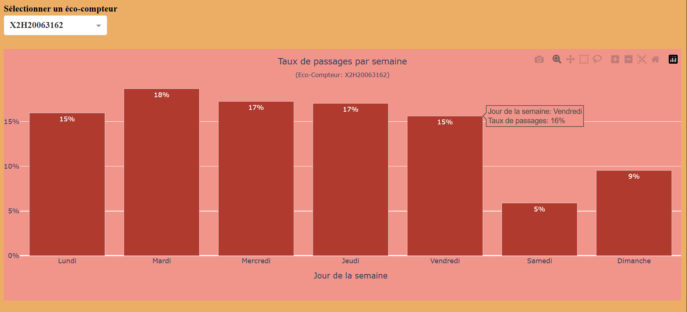

Projets personnels
Dans cette section, vous trouverez quelques projets réalisés (pour le fun) avec le langage
Python,
afin d'améliorer mes compétences sur ce langage, en particulier pour le pré-traitement et la visualisation de données.
Pour plus de détails, faites un tour sur mon github:
github
Visualisation de données open source
Ci-dessous, des captures provenant de deux dashboards interactifs que j'ai réalisé avec
Dash,
un framework open source de visualisation de données en Python.
En utilisant plusieurs types de visualisations différentes,
ces dashboards permettent d'explorer et de mieux comprendre des jeux de données.
Ce premier dashboard affiche les données fournies (quotidiennement) par le gouvernement français concernant les prix des différents carburants à travers le pays (en 2023).
Il offre une vue d'ensemble des fluctuations des prix de l'essence, du diesel et d'autres carburants,
permettant ainsi de suivre leur évolution dans le temps.


Le code source du dashboard ci-dessus n'est pas open source.
Si vous souhaitez accéder au code pour des raisons spécifiques,
une invitation privée pourra vous être envoyée via GitHub.
N'hésitez pas à me contacter par mail pour expliquer votre demande.
Le dashboard ci-dessous se concentre sur le trafic cycliste à Montpellier, grâce aux données collectées par des éco-compteurs.
Ces capteurs, placés dans divers endroits de la ville, enregistrent le nombre de vélos passant quotidiennement.
Cela permet de mieux comprendre les habitudes de déplacement à vélo, ainsi que l'évolution du trafic cycliste
au fil des saisons et des événements urbains.




Si le code source du dashboard ci-dessus vous intéresse, vous pouvez consulter le
code source du projet, en anglais, sur mon github:
DashBike
Machine Learning
Le Machine Learning (ou apprentissage automatique) est une branche de l'intelligence artificielle qui permet
à des machines (ordinateurs, systèmes) d'apprendre à partir de données, sans être explicitement programmées
pour chaque tâche. Grâce à des algorithmes, elles identifient des motifs dans les données d'entrainement et s'améliorent
au fil des itérations. Une fois l'algorithme entrainé, il peut faire des prédictions ou reconnaître des objets, par exemple.
Un des projets les plus captivant j'ai pu faire, consiste à entrainer un
réseau de neurones afin qu'il soit capable de détecter
un visage humain via une webcam en temps réel. Ce projet, que j'ai nommé FaceDetection,
est disponible sur mon github: FaceDetection
Le modèle utilisé pour réussir la detection est une variante de l'architecture dite VGG16, qui est
un réseau neuronal convolutionnel (CNN).
Le modèle se compose de deux éléments principaux : Classification: chargée de déterminer si un visage est présent ou non dans l'image d'entrée.
Régression: calcule les coordonnées des points pour définir un cadre rectangulaire autour du visage détecté.
Le modèle se compose de deux éléments principaux :